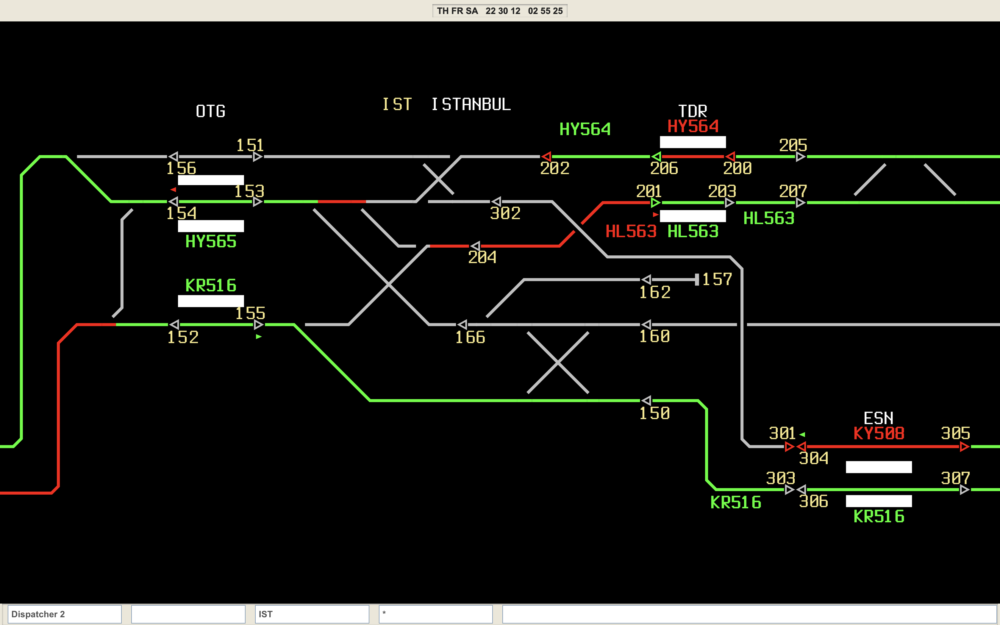

Web-based simulation of Indian Railway Section Controller operations
TrackTitans simulates the Indian Railway Section Controller system used for mainline operations on the Delhi-Agra section. Real commands and track data inspired by Indian Railway operations are included in the simulation.
The following systems are being used in the section:
Electronic Interlocking - Main Signalling Control System
FOIS - Freight Operations Information System
CRIS - Centre for Railway Information Systems
The simulation is written in JavaScript, is open source and can run on any web browser

Screenshot of the simulation